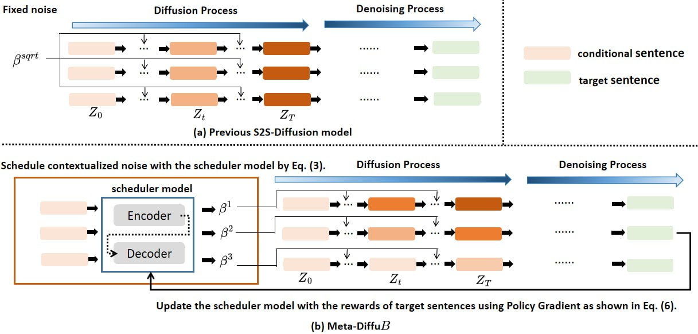

NeurIPS 2024 · Maxora AI and National Taiwan University
Meta-DiffuB
A noise schedule learned for every sentence.

- Condition
- How do I get better at public speaking?
- Generating
- Noise level
- Step
- t = 2000
- Illustration: the target sentence emerges as the exploiter removes noise step by step, under a schedule the scheduler picked for this input.
Fixed noise treats every sentence the same.
Text diffusion models such as DiffuSeq add noise on one hand-picked curve, whether the sentence is trivial or tricky.
Seq2Seq tasks don't work that way. Some targets are almost a copy of the input; others need real rewriting. Meta-DiffuB gives each conditional sentence its own noise schedule, and the schedule keeps adapting as training goes on.
What it learned surprised us: it puts less noise on hard sentences and more on easy ones, and that is what improves both quality and diversity.
The last 10 diffusion steps; darker cells mean more noise. Schematic, after Figure 3 of the paper, which averages Meta-DiffuB's noise over the 200 easiest and 200 hardest sentences.
A scheduler that learns from how well the model learns.
Meta-DiffuB pairs two models. The scheduler reads the input and decides the noise. The exploiter, a standard S2S-Diffusion model, trains under that noise. The scheduler is then rewarded by how much the exploiter improved.
- Read the input. The scheduler, a small Seq2Seq model, encodes the conditional sentence.
- Emit Meta-Instructions. One True/False per diffusion step: step up the noise, or hold it.
- Train the exploiter. It learns to denoise under that schedule, exactly like DiffuSeq otherwise.
- Reward the scheduler. The BLEU gain becomes a policy-gradient signal, gathered over 32 parallel exploration epochs.
Try the skipping rule
Toggle each Meta-Instruction. True moves to the next value on the fixed sqrt curve; False holds the current one.

Best mean rank on all four benchmarks.
Compared against DiffuSeq, SeqDiffuSeq, Dinoiser and fine-tuned GPT-2 and LevT, with the same data and training settings as DiffuSeq.
Mean rank across BLEU, ROUGE-L, BERTScore, Dist-1 and Self-BLEU. Lower is better; 1.00 means first on every metric.
Hard sentences don't break it.
On the 200 hardest Wiki-Auto sentences, other diffusion models lose 12–28% of their BLEU. Meta-DiffuB loses 7%.
Because it gives harder inputs a gentler schedule, the exploiter keeps more of the signal it needs, and the outputs stay diverse too: Self-BLEU on hard sentences is 0.406, against 0.509 for DiffuSeq.
Plug it into a model you already trained.
A scheduler trained on one dataset improves a pre-trained DiffuSeq on another, at inference time, with no fine-tuning.
It also works as a drop-in for other diffusion models. Wrapping SeqDiffuSeq raises its QQP BLEU from 0.243 to 0.263; wrapping Dinoiser, from 0.195 to 0.227.
DiffuSeq on QQP, BLEU
Overhead of adding Meta-DiffuB to DiffuSeq (Table 1).
Cite this work
@inproceedings{chuang2024metadiffub,
title = {Meta-DiffuB: A Contextualized Sequence-to-Sequence Text Diffusion Model with Meta-Exploration},
author = {Chuang, Yun-Yen and Hsu, Hung-Min and Lin, Kevin and Gu, Chen-Sheng and Li, Ling-Zhen and Chang, Ray-I and Lee, Hung-yi},
booktitle = {Advances in Neural Information Processing Systems},
volume = {37},
year = {2024}
}